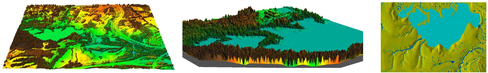
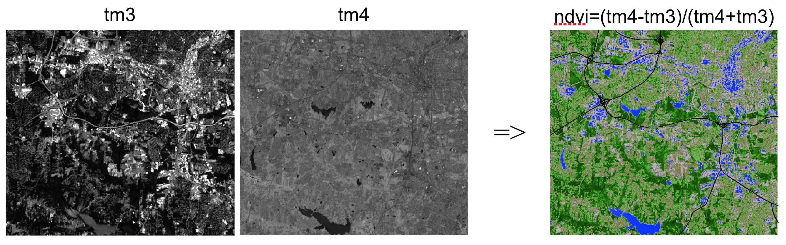
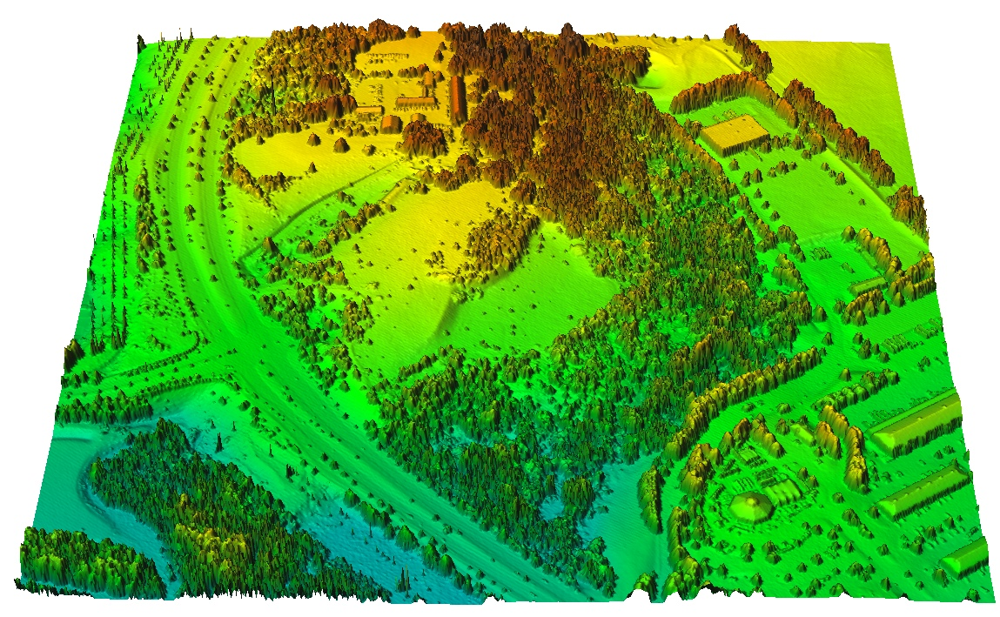
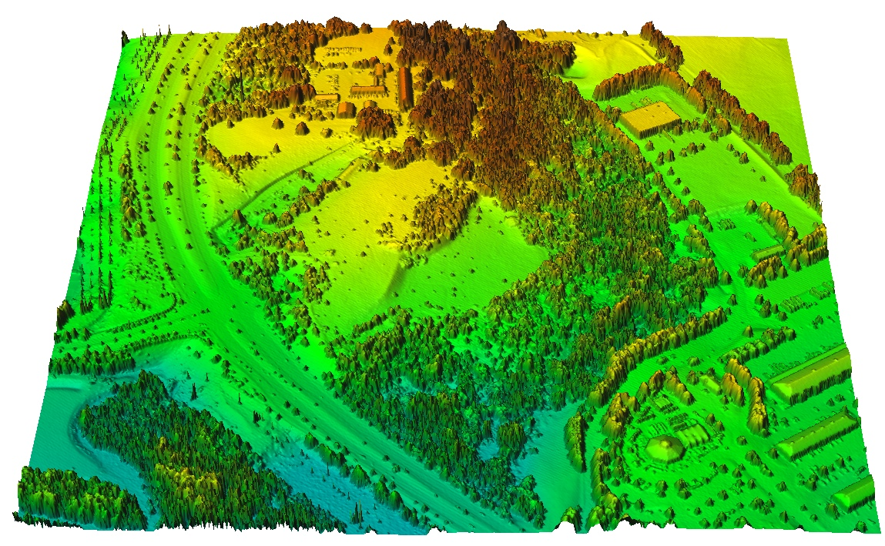
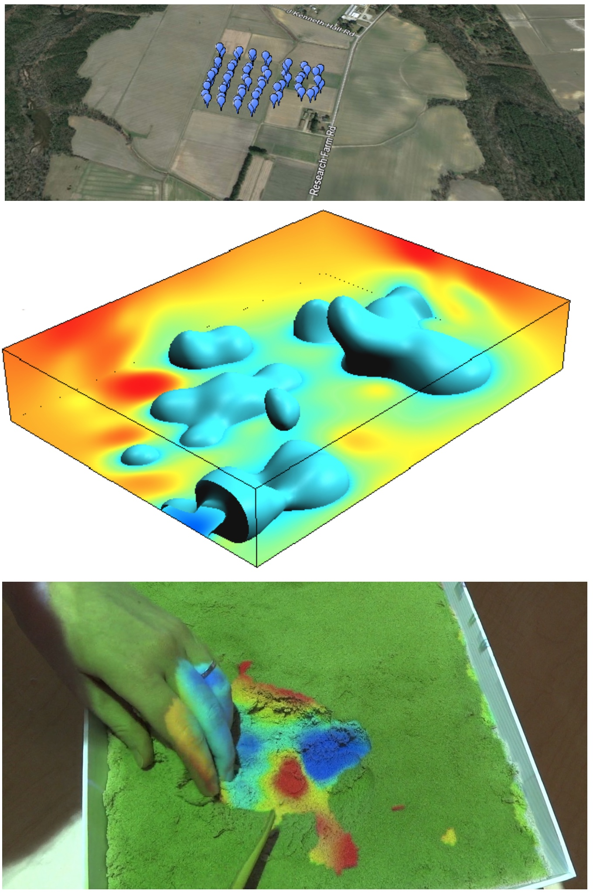

Course topics
- Continuous and discrete geospatial data models
- Data display and 2D/3D geovisualization
- Raster-based geospatial analysis, map algebra
- Proximity analysis, buffers, cost surfaces and LCP
- Points to rasters - Spatial interpolation
- Terrain modeling and topographic analysis
- Viewshed, solar energy potential analysis
- Flow routing, watershed analysis, erosion modeling

Course structure
- offered on-campus (spring) and on-line (spring and fall)
- material can be accessed on-line any time
- lectures: software independent, slides with audio
- assignments: in both GRASS GIS and ArcGIS
- independent project


Data display and geovisualization
- data display and visualization for data analysis
- communication of geospatial information

Selecting color ramp to highlight hidden spatial patterns: North Carolina elevation
Viewing data in 3D perspective
3D visualization is used in many assignments


Multiple surfaces based on lidar and cut-planes
DEMs with color maps: land cover, erosion, elevation
Dynamic geovisualization
Time series of DEMs from digitized contours and lidar

Jockey's Ridge sand dune migration: 1974 - 2014
Raster-based geospatial analysis
Techniques for efficient solutions of geospatial problems
- global, zonal, focal and neighborhood operators
- map algebra

Computing NDVI (green vegetation index) from LANDSAT imagery using map algebra
Proximity problem solving
Buffers, cost surfaces, least cost path
Finding least cost path from firestations to accident in SW Wake county
Points to rasters: spatial interpolation
- Using the values measured at irregularly distributed points we
compute the values at regular grid
- methods and their properties
- implementation and application issues

Splines: tuning the tension
Result of interpolation depends on the selection of parameters, in this example,
the lower the spline tension, the smoother the surface

Terrain modeling from lidar
From lidar point cloud to DEM and DSM
 

Geomorphometry
- Land surface geometry is measured by topographic parameters
- we can derive basic landform classes from topographic parameters
profile curvature and landforms at two different levels of detail
Viewshed and solar energy
Problems based on ray-tracing: line of sight, radiation

Dynamics of cast shadows and solar energy potential on June 22
Modeling landscape processes
Flow routing, watershed analysis and erosion modeling

Independent Project
- Focused on student's research interests,
- any geospatial software can be used
- should include a surface or continuous field component

Anna Petrasova and Vaclav Petras
Final Portfolio
- Six assignment papers with insightful 2D and 3D graphics that represent the course foundation topics
- Independent project paper : some evolve into papers for conferences or scientific journals